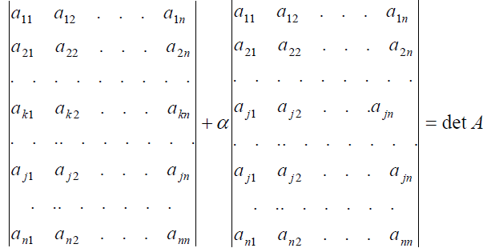
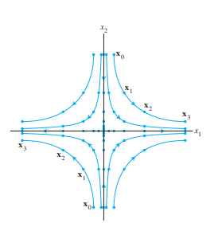
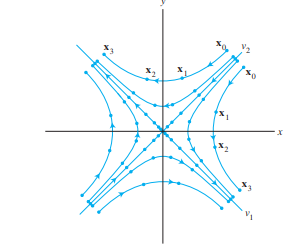
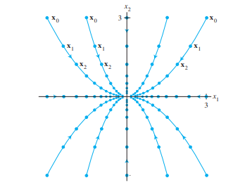
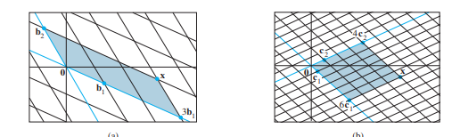

Детерминанта е уникатен број кој може да се поврзе со квадратна матрица. Ако $ A $ е квадратна матрица, нејзината детерминанта се означува со $ |A| $.
На пример, за матрица $ A $ со димензии $ n \times n $:
Матрица од ред 2: За квадратна матрица $ A $ од ред 2, детерминантата се пресметува како:
Матрица од ред 3: За квадратна матрица $ A $ од ред 3, детерминантата се пресметува со Сајрусово правило:
Нека $ S $ е конечно множество со $ n $ елементи. Секоја биекција од $ S $ во $ S $ се нарекува пермутација на тоа множество. Елементите може да се нумерираат со првите $ n $ природни броеви $ \{1, 2, \dots, n\} $.
Пермутациите може да се претстават како:
каде $ i_k $ е бројот во кој $ k $ се пресликува. Алтернативно, се претставуваат само со низата $ I = (i_1, i_2, i_3, \dots, i_n) $, каде сите $ i_k $ се различни елементи од $ \{1, 2, \dots, n\} $.
Бројот на различни пермутации на множество од $ n $ елементи е $ n! $ (факториел).
За било кој пар елементи $ i, j $ од дадена пермутација, таков што $ i $ му претходи на $ j $, велиме дека прават инверзија ако $ i > j $.
Пример: Во пермутацијата 2413:
Парот (2, 1) прави инверзија (2 > 1).
Парот (4, 1) прави инверзија (4 > 1).
Парот (4, 3) прави инверзија (4 > 3).
Вкупно 3 инверзии.
Пресметување на инверзии:
Броиме колку елементи пред 1 се поголеми од 1.
Броиме колку елементи пред 2 се поголеми од 2.
...и така натаму за сите елементи.
Вкупниот број на инверзии е збир на сите изброени инверзии.
Пример: Во пермутацијата 35142:
Пред 1: 2 елементи (3, 5) $ \rightarrow $ 2 инверзии.
Пред 2: 3 елементи (3, 5, 4) $ \rightarrow $ 3 инверзии.
Пред 3: 0 елементи $ \rightarrow $ 0 инверзии.
Пред 4: 1 елемент (5) $ \rightarrow $ 1 инверзија.
Вкупно: $ 2 + 3 + 0 + 1 = \textbf{6} $ инверзии.
Парна пермутација: Пермутација во која има парен број инверзии.
Непарна пермутација: Пермутација во која има непарен број инверзии.
Бројот на инверзии на дадена пермутација $ I = (i_1, i_2, i_3, \dots, i_n) $ се означува со $ I_p $.
Пример:
35142 е парна (6 инверзии).
12345 е парна (0 инверзии).
21345 е непарна (1 инверзија).
Својство за парност: Ако во пермутација два елементи си ги заменат местата, а сите други остануваат на место, се добива пермутација со спротивна парност од претходната.
Доказ: Со замена на местата на $ i_a $ и $ i_b $ ($ a < b $), бројот на инверзии се менува за непарен број. Ако $ i_a < i_b $, се создава една нова инверзија. Ако $ i_a > i_b $, се губи една инверзија помеѓу $ i_a $ и $ i_b $, и секој елемент $ i_k $ помеѓу $ i_a $ и $ i_b $ ($ i_a > i_k > i_b $) ќе го промени својот однос со $ i_a $ и $ i_b $ (две инверзии се губат или создаваат). Вкупната промена е секогаш непарен број.
Детерминантата на квадратна матрица $ A $ од ред $ n $ е алгебарски збир на сите можни производи од по $ n $ елементи од матрицата $ A $. Во секој производ се јавува само по еден елемент од секоја редица и секоја колона. Секој таков производ се нарекува член на детерминантата.
Членот $ a_{1i_1}a_{2i_2}\dots a_{ni_n} $ има знак + ако пермутацијата $ (i_1, i_2, \dots, i_n) $ е парна, и знак - ако пермутацијата е непарна.
Напомена: Бројот на различни членови е $ n! $. Од нив, $ n!/2 $ имаат позитивни предзнаци, а $ n!/2 $ имаат негативни предзнаци.
Детерминанта на нулта матрица: $ |O_{n \times n}| = \textbf{0} $.
Доказ: Сите членови на производите $ a_{1i_1}a_{2i_2}\dots a_{ni_n} $ се 0.
Детерминанта на дијагонална матрица: Производ на елементите по дијагонала. За единична матрица $ |I_{n \times n}| = \textbf{1} $.
Доказ: Единствен ненулти член е $ a_{11}a_{22}\dots a_{nn} $. Сите други производи содржат барем еден член кој не е на дијагоналата, а тој е 0.
Редица со нули: Ако елементите од една редица на матрицата се нули, тогаш детерминантата е $ \textbf{0} $.
Доказ: Секој производ $ a_{1i_1}a_{2i_2}\dots a_{ni_n} $ мора да има по еден член од секоја редица, па и од таа со нули, што го прави целиот производ 0.
Замена на редици: Ако две редици си ги заменат местата, детерминантата го менува знакот.
Доказ: Секоја пермутација $ (i_1, i_2, \dots, i_n) $ ја менува парноста, па знакот пред секој член ќе се смени.
Еднакви редици: Ако две редици се еднакви, тогаш детерминантата е $ \textbf{0} $.
Доказ: Ако $ A' $ се добива од $ A $ со замена на местата на тие две еднакви редици, тогаш $ A=A' $. Од претходното својство, $ |A'|=-|A| $, па $ |A|=-|A| $, што значи $ 2|A|=0 $, односно $ |A|=0 $.
Множење на редица со скалар: Ако една редица се помножи со $ m $, тогаш детерминантата се множи со $ m $.
Доказ: Секој производ $ a_{1i_1}a_{2i_2}\dots a_{ni_n} $ има барем еден член од таа редица, кој ќе биде помножен со $ m $.
Редица како збир: Ако секој елемент од $ k $-тата редица на матрицата $ A $ се претстави како збир на два собироци ($ a_{kj}=b_{kj}+c_{kj} $), тогаш детерминантата на $ A $ е еднаква на збирот на детерминантите на матриците $ B $ и $ C $, чии редици се исти со редиците на $ A $, освен $ k $-тата редица.
Доказ: Следува од дистрибутивноста на собирањето во дефиницијата на детерминантата. $$ \det(A) = \sum_{\pi}(-1)^{\pi} a_{1i_1}a_{2i_2}\dots(b_{ki_k}+c_{ki_k})\dots a_{ni_n} = \sum_{\pi}(-1)^{\pi} a_{1i_1}a_{2i_2}\dots b_{ki_k}\dots a_{ni_n} + \sum_{\pi}(-1)^{\pi} a_{1i_1}a_{2i_2}\dots c_{ki_k}\dots a_{ni_n} = |B|+|C| $$ 
Елементарни редични операции: Ако една редица се помножи со реален број различен од 0 и се додаде на друга редица или колона, детерминантата останува иста.
Минор ($ M_{ij} $): Детерминантата на матрицата која се добива ако на $ A $ ѝ се избрише $ i $-тата редица и $ j $-тата колона. Минорот е од ред $ (n-1) $.
Алгебарски комплемент или кофактор ($ A_{ij} $):
Својство: Ако сите елементи во еден ред на квадратна матрица $ A $ се нули, освен елементот $ a_{ij} $ (кој не мора да е нула), тогаш $ \det(A) = a_{ij} \cdot A_{ij} $.
Доказ: Со промена на редици и колони, елементот $ a_{ij} $ може да се донесе на позиција $ (1,1) $. Секоја промена на редици/колони го менува знакот на детерминантата. Бројот на вакви промени е $ (i-1) + (j-1) $. Така, $ \det(A_1) = (-1)^{i-1+j-1}\det(A) = (-1)^{i+j}\det(A) $. Бидејќи во $ A_1 $ елементот $ a_{ij} $ е на позиција $ (1,1) $ и сите други елементи во првата редица се нула, а неговиот минор не се променил, добиваме $ \det(A_1) = a_{ij} \cdot M_{ij} $. Од тука, $ \det(A) = (-1)^{i+j} a_{ij} M_{ij} = a_{ij}A_{ij} $.
Својство (Лапласов развој): Детерминантата на дадена матрица е еднаква на збирот на производите од елементите од еден ред (или колона) и нивните алгебарски комплементи.
Развивање по $ i $-та редица:
Развивање по $ j $-та колона:
Доказ: Секој елемент $ a_{ij} $ од $ i $-тиот ред може да се претстави како $ 0+\dots+0+a_{ij}+0+\dots+0 $. Според својството за редица како збир, детерминантата на оригиналната матрица е збир од детерминанти на матрици каде во $ i $-тиот ред има само еден ненулти елемент ($ a_{ij} $) и останатите се нули. Според претходното својство, секоја од овие детерминанти е $ a_{ij}A_{ij} $. Собирањето на овие термини го дава Лапласовиот развој.
Напомена: Истиот доказ може да се направи и со претставување на матрицата како збир од матрици на кои во една од колоните само еден од елементите е ненулти.
$ |A^T| = |A| $.
Доказ: Следува директно од тоа што развојот по редици на транспонираната матрица е еднаков на развојот по колони на оригиналната матрица.
Напомена: Сите својства поврзани со промена на редици важат и за промена на колони.
Својство: Ако $ A' $ е ешалонската форма на квадратна матрица $ A $, тогаш $ |A'| = (-1)^r|A| $, каде $ r $ е бројот на промени на редици.
Доказ: Промената на редици го менува знакот, додека множењето на редица со број и додавање на друга редица не ја менува вредноста на детерминантата.
Својство: Детерминантата на триаголна матрица е производ на елементите по дијагоналата.
Доказ: Следува веднаш од теоремата за пресметување на матрица (Лапласов развој), ако се развива по првата редица.
Својство: Квадратна матрица $ A $ е инверзибилна ако и само ако $ |A| \neq 0 $.
Доказ: Следува од претходното својство и од фактот дека детерминантата на матрица во ешалонската форма е производ на дијагоналата. Ако $ |A| \neq 0 $, тогаш ешалонската форма ќе има ненулти елементи на дијагоналата и ќе биде инверзибилна.
Својство: Детерминанти на елементарни матрици:
$ |E_{ij}| = -1 $ (замена на редици).
$ |E_{ij}(a)| = 1 $ (множење редица со број и додавање на друга).
$ |E_i(a)| = a $ (множење редица со број $ a $).
Доказ: Следува веднаш од својствата како се добиваат овие матрици од единичната матрица $ I $.
Својство: $ |AB| = |A||B| $.
Доказ:
Ако $ A $ не е инверзибилна, тогаш $ AB $ не е инверзибилна, па $ |A|=|AB|=0 $.
Ако $ E $ е елементарна матрица, тогаш $ |EB|=|E||B| $. Ова се докажува за секој тип елементарна матрица (промена на редици, множење и додавање, множење со скалар).
Ако $ A $ е инверзибилна, таа може да се добие како производ на елементарни матрици: $ A=E_1E_2\dots E_s $. Тогаш: $ |AB| = |E_1E_2\dots E_sB| = |E_1||E_2\dots E_sB| = \dots = |E_1E_2\dots E_s||B| = |A||B| $.
Дефиниција: Нека $ A = [a_1 \dots a_i \dots a_n] $ е дадена квадратна матрица и $ x $ е некој вектор. Со $ A_i(x) $ ја дефинираме матрицата која се добива со замена на $ i $-тата редица на $ A $ со векторот $ x $. Функцијата $ T_{A_i(x)} $ е детерминанта на $ A_i(x) $:
Својство: Детерминантната функција е линеарна функција.
Доказ:
Скаларно множење: $ |A_i(cx)| = c|A_i(x)| $.
Собирање: $ |A_i(x+y)| = |A_i(x)| + |A_i(y)| $.
Ова следува од својството 7 за детерминанти (редица како збир) и својството 6 (множење на редица со скалар).
Теорема: Нека $ A $ е инверзибилна матрица. Тогаш за секое $ b $, единственото решение на равенката $ Ax=b $ е $ x_i = \frac{|A_i(b)|}{|A|} $.
Доказ: Нека $ e_i $ се единичните вектори. Тогаш $ A[e_1 \dots e_{i-1} \ x \ e_{i+1} \dots e_n] = [a_1 \dots a_{i-1} \ Ax \ a_{i+1} \dots a_n] = [a_1 \dots a_{i-1} \ b \ a_{i+1} \dots a_n] $. Земајќи детерминанта од двете страни: $ |A||[e_1 \dots e_{i-1} \ x \ e_{i+1} \dots e_n]| = |A_i(b)| $. Детерминантата $ |[e_1 \dots e_{i-1} \ x \ e_{i+1} \dots e_n]| $ е всушност $ x_i $ (со развивање по $ i $-та колона). Значи, $ |A|x_i = |A_i(b)| $, од каде $ x_i = \frac{|A_i(b)|}{|A|} $.
Пример: За кои вредности на $ s $ системот има решение и кое е?
Својство: $ (A^{-1})_{ij} = \frac{|A_i(e_j)|}{|A|} = \frac{M_{ji}}{|A|} $.
Доказ: Следува веднаш од Крамеровото правило. $ j $-тата колона на $ A^{-1} $ е решение на равенката $ Ax=e_j $. $ i $-тиот елемент од овој вектор $ x_{ij} $ е $ x_{ij} = \frac{|A_i(e_j)|}{|A|} $. $ |A_i(e_j)| $ е детерминанта на матрица каде $ i $-тата колона е $ e_j $. Ако се пресмета со развој по $ i $-тата колона, ќе се добие $ (-1)^{i+j}M_{ji} $.
Теорема (Плоштина): Плоштината на паралелограм во $ \mathbb{R}^2 $ чии страни се вектор-колоните (или вектор-редиците) на матрицата $ A $ е $ ||A|| $ (апсолутна вредност на $ |A| $).
Доказ: За дијагонална матрица $ A = \begin{pmatrix} a & 0 \\ 0 & b \end{pmatrix} $, плоштината е $ ab = |A| $. Со елементарни трансформации (кои не ја менуваат детерминантата или го менуваат знакот), матрицата може да се доведе до дијагонална форма. Овие трансформации го зачувуваат волуменот на паралелограмот. Ако векторите се паралелни, плоштината е 0, и $ |A|=0 $.
Теорема (Волумен): Волуменот на паралелопипед во $ \mathbb{R}^3 $ чии страни се вектор-колоните (или вектор-редиците) на матрицата $ A $ е $ |A| $.
Доказ: Аналоген на доказот за паралелограм.
Теорема: Ако $ T $ е линеарна трансформација од $ \mathbb{R}^n \to \mathbb{R}^n $ ($ n=2 $ или $ n=3 $) со матрица на трансформација $ A $, тогаш плоштината (волуменот) на сликата на паралелограм (паралелопипед) со страни вектор-колоните на $ S $, $ T(S) $, е $ |A| \cdot $ плоштината на паралелограмот (волуменот на паралелопипедот) $ S $.
Доказ: Плоштината $ T(S) = \text{abs}|AS| = \text{abs}|A|\text{abs}|S| = \text{abs}|A| \cdot \text{плоштина на } S $.
Во многу линеарни трансформации, одредени вектори само се скалираат (ја менуваат својата должина и/или насока), но не го губат својот правец. Овие вектори се од особено значење.
На пример, за стохастичка матрица $ A $, секогаш постои вектор на стабилна состојба $ q $ таков што $ Aq=q=1 \cdot q $. Овде 1 е скалирачкиот фактор.
Во општ случај, нè интересираат вектори $ x $ за кои важи $ Ax = \lambda x $, каде $ \lambda $ е скаларен фактор.
Сопствен вектор: На $ n \times n $ матрица $ A $ е ненулти вектор $ x $ за кој постои скалар $ \lambda $ таков што:
Сопствена вредност: Еден скалар $ \lambda $ се нарекува сопствена вредност на $ A $ ако равенката $ Ax = \lambda x $ има нетривијално решение по $ x $. Таквиот $ x $ се нарекува сопствен вектор што одговара на сопствената вредност $ \lambda $.
Пример: Ако $ Ax = -4x $, тогаш $ -4 $ е сопствена вредност, а $ x $ е сопствен вектор кој одговара на $ -4 $.
Равенката $ Ax = \lambda x $ е еквивалентна со $ Ax - \lambda x = 0 $, што може да се запише како $ (A - \lambda I)x = 0 $, каде $ I $ е единична матрица. Ова е хомоген систем.
Бидејќи $ (A - \lambda I)x = 0 $ е хомоген систем, за специфична, фиксирана сопствена вредност $ \lambda $, ќе имаме цел нул-потпростор од $ \mathbb{R}^n $ за кој ќе важи равенството. Овој потпростор се нарекува сопствен простор на $ \lambda $.
Пример: Ако $ \lambda = 2 $ е сопствена вредност за матрица $ A $, тогаш сопствениот простор е множеството решенија на $ (A - 2I)x = 0 $.
Теорема 2: Нека $ \{v_1, \dots, v_r\} $ се сопствени вектори кои соодветствуваат на различни сопствени вредности $ \lambda_1, \dots, \lambda_r $ на една $ n \times n $ матрица $ A $. Тогаш множеството $ \{v_1, \dots, v_r\} $ е линеарно независно.
Доказ: (Со контрадикција) Да претпоставиме дека множеството е линеарно зависно. Нека $ v_{p+1} $ е првиот вектор кој може да се претстави како линеарна комбинација од претходните: $ v_{p+1} = c_1v_1 + \dots + c_pv_p $. Со множење со $ A $ и користење на $ Av = \lambda v $, и потоа со множење на целата комбинација со $ \lambda_{p+1} $, се доаѓа до нетривијална линеарна комбинација на првите $ p $ вектори која е еднаква на 0, што е контрадикција на претпоставката дека тие се линеарно независни.
Рекурзивна равенка: $ x_{k+1} = Ax_k $.
Ако $ \lambda $ е сопствена вредност за $ A $, а $ x_0 $ е соодветниот сопствен вектор, тогаш решение на равенката е:
Доказ: (Со индукција) За $ k=1 $, $ x_1 = Ax_0 = \lambda x_0 $. Ако важи за $ k $, тогаш за $ k+1 $: $ x_{k+1} = Ax_k = A(\lambda^k x_0) = \lambda^k (Ax_0) = \lambda^k (\lambda x_0) = \lambda^{k+1} x_0 $.
Ако системот $ (A - \lambda I)x = 0 $ има нетривијално решение, тогаш матрицата $ (A - \lambda I) $ не е инвертибилна. Ова значи дека нејзината детерминанта е нула:
Дефиниција: $ \det(A - \lambda I) = 0 $ се нарекува карактеристична равенка, а $ \det(A - \lambda I) $ е карактеристичен полином за матрицата $ A $.
Својство: Скаларот $ \lambda $ е сопствена вредност ако и само ако $ \det(A - \lambda I) = 0 $.
Пример: За матрица $ A $, ако $ \det(A - \lambda I) = (5-\lambda)^2(3-\lambda)(1-\lambda) = 0 $, тогаш сопствените вредности се $ 5, 3, 1 $. Карактеристичниот полином е $ \lambda^4 - 14\lambda^3 + 68\lambda^2 - 130\lambda + 75 = 0 $.
Дефиниција: Ако $ A $ и $ B $ се $ n \times n $ матрици, велиме дека $ A $ е слична со $ B $ ако постои инверзибилна матрица $ P $ таква што $ P^{-1}AP = B $. Трансформацијата од $ A $ во $ P^{-1}AP $ се нарекува сличност.
Теорема 4: Ако $ n \times n $ матриците $ A $ и $ B $ се слични, тогаш имаат ист карактеристичен полином и според тоа исти сопствени вредности.
Доказ: Нека $ B = P^{-1}AP $. Тогаш $ B - \lambda I = P^{-1}AP - \lambda I = P^{-1}AP - \lambda P^{-1}P = P^{-1}(A - \lambda I)P $. $ \det(B - \lambda I) = \det(P^{-1}(A - \lambda I)P) = \det(P^{-1})\det(A - \lambda I)\det(P) = \det(P^{-1})\det(P)\det(A - \lambda I) = \det(A - \lambda I) $. Бидејќи $ \det(P^{-1})\det(P) = \det(P^{-1}P) = \det(I) = 1 $.
Напомена: Ако две матрици имаат исти сопствени вредности, не мора да значи дека се слични. Сличноста не е иста со редична еквивалентност.
Дефиниција: За квадратна матрица $ A $ велиме дека е дијагонализибилна ако е слична со дијагонална матрица.
Теорема: Една $ n \times n $ матрица $ A $ е дијагонализибилна ако и само ако $ A $ има $ n $ линеарно независни сопствени вектори. Всушност, $ A = PDP^{-1} $ ако и само ако колоните на $ P $ се $ n $-те линеарно независни сопствени вектори, а елементите на дијагоналата на $ D $ се сопствените вредности на $ A $.
Доказ: Ако $ A = PDP^{-1} $, тогаш $ AP = DP $. Колоните на $ P $ се сопствени вектори, а дијагоналните елементи на $ D $ се соодветните сопствени вредности. Обратно, ако $ A $ има $ n $ линеарно независни сопствени вектори кои ги формираат колоните на $ P $, и соодветните сопствени вредности се на дијагоналата на $ D $, тогаш $ AP = PD $, од каде $ A = PDP^{-1} $.
Пример: Да се дијагонализира матрица $ A = \begin{pmatrix} 3 & 3 & 1 \\ -3 & -5 & -3 \\ 1 & 3 & 3 \end{pmatrix} $.
Карактеристичен полином: $ P(\lambda) = -(\lambda+2)^2(\lambda-1) $. Сопствени вредности се $ 1 $ и $ -2 $ (со кратност 2).
За $ \lambda=1 $: Сопствен вектор $ \begin{pmatrix} 1 \\ -1 \\ 1 \end{pmatrix} $.
За $ \lambda=-2 $: Сопствени вектори $ \begin{pmatrix} 1 \\ -1 \\ 0 \end{pmatrix} $ и $ \begin{pmatrix} 1 \\ 0 \\ -1 \end{pmatrix} $.
Бидејќи има 3 линеарно независни сопствени вектори, матрицата е дијагонализибилна.
$ P = \begin{pmatrix} 1 & 1 & 1 \\ -1 & -1 & 0 \\ 1 & 0 & -1 \end{pmatrix} $, $ D = \begin{pmatrix} 1 & 0 & 0 \\ 0 & -2 & 0 \\ 0 & 0 & -2 \end{pmatrix} $.
Пример: Матрица која не може да се дијагонализира.
Ако за сопствена вредност со кратност 2 има само еден линеарно независен сопствен вектор, тогаш матрицата не може да се дијагонализира.
Теорема: Нека $ A $ е $ n \times n $ матрица која има сопствени вредности $ \lambda_1, \dots, \lambda_p $ ($ p \le n $).
За секое $ k $, димензијата на сопствениот потпростор соодветен за $ \lambda_k $ има димензионалност помала или еднаква на кратноста на $ \lambda_k $.
Матрицата може да се дијагонализира ако и само ако сумата на димензиите на сите сопствени потпростори е еднаква на $ n $.
Ако матрицата може да се дијагонализира, унијата на базите на сопствените потпростори претставува база за $ \mathbb{R}^n $.
Линеарните пресликувања се определени со нивното дејство на векторите од база на доменот. Ако $ h: V \to W $ е хомоморфизам, $ V $ има база $ \mathcal{B} = \{\beta_1, \dots, \beta_n\} $, тогаш за секој вектор $ v = c_1\beta_1 + \dots + c_n\beta_n $:
Ова се нарекува линеарно проширување.
Пример: Нека $ V = P_2 $ и $ W = \mathbb{R}^2 $ со бази $ \mathcal{B}_V = \{1, x, x^2\} $ и $ \mathcal{B}_W = \{\begin{pmatrix} 1 \\ 0 \end{pmatrix}, \begin{pmatrix} 0 \\ 1 \end{pmatrix}\} $. Нека $ h: P_2 \to \mathbb{R}^2 $ има дејство: $ h(1) = \begin{pmatrix} 2 \\ 1 \end{pmatrix} $, $ h(x) = \begin{pmatrix} -1 \\ 3 \end{pmatrix} $, $ h(x^2) = \begin{pmatrix} 0 \\ -2 \end{pmatrix} $. Координатите на сликите во однос на базата $ \mathcal{B}_W $ се: $ \text{Rep}_{\mathcal{B}_W}(h(1)) = \begin{pmatrix} 2 \\ 1 \end{pmatrix} $, $ \text{Rep}_{\mathcal{B}_W}(h(x)) = \begin{pmatrix} -1 \\ 3 \end{pmatrix} $, $ \text{Rep}_{\mathcal{B}_W}(h(x^2)) = \begin{pmatrix} 0 \\ -2 \end{pmatrix} $. Од овие координатни вектори формираме матрица:
Ако произволен вектор $ v \in V $ е $ v = c_1\beta_1 + c_2\beta_2 + c_3\beta_3 $, тогаш координатите на $ h(v) $ во однос на $ \mathcal{B}_W $ се:
Дефиниција: Нека $ V $ и $ W $ се векторски простори со димензии $ n $ и $ m $, и бази $ \mathcal{B} $ и $ \mathcal{D} $ соодветно. Нека $ h: V \to W $ е линеарно пресликување. Ако $ \text{Rep}_{\mathcal{D}}(h(\beta_j)) = \begin{pmatrix} h_{1j} \\ \vdots \\ h_{mj} \end{pmatrix} $, тогаш матрицата:
Теорема: Ако $ H_{\mathcal{B}, \mathcal{D}} $ е матричната репрезентација на $ h $, и $ \text{Rep}_{\mathcal{B}}(v) $ се координатите на $ v \in V $ во однос на $ \mathcal{B} $, тогаш координатите на $ h(v) $ во однос на $ \mathcal{D} $ се:
Како да се претвори матричната репрезентација $ H_{\mathcal{B}, \mathcal{D}}(h) $ во $ H_{\hat{\mathcal{B}}, \hat{\mathcal{D}}}(h) $ во однос на друг пар бази $ \hat{\mathcal{B}} $ и $ \hat{\mathcal{D}} $?
Теорема 8: Нека $ A = PDP^{-1} $, каде $ D $ е дијагонална $ n \times n $ матрица. Ако $ \mathcal{B} $ е база од $ \mathbb{R}^n $ од колоните на $ P $, тогаш $ D $ е $ \mathcal{B} $-матрица на трансформација $ x \to Ax $.
Ова значи дека ако пресликувањето го претставиме преку оваа база, тогаш матрицата на пресликување ќе биде дијагонална.
Ако сите сопствени вредности се реални, секоја точка ќе се скалира за сопствената вредност по соодветната координата.
Ако има комплексни сопствени вредности, за секој комплексен број ќе го имаме и неговиот конјугиран како сопствена вредност. Освен скалирање (по модул од комплексниот број), ќе имаме и ротација за аголот кој го претставува тој комплексен број.
$ x_{k+1} = Ax_k $
$ x_k = A^k x_0 $
Ако $ A $ може да се запише како $ P D P^{-1} $ (дијагонализибилна матрица), тогаш: $ A^k = (PDP^{-1})^k = P D^k P^{-1} $.
Дијагонална матрица лесно се дига на степен $ k $, затоа што секој елемент од дијагоналата треба да се дигне на степен $ k $.
Секоја ситуација која може да се моделира со ваков систем може лесно да се реши ако се пресметани сопствените вредности и сопствените вектори.
Модел за популација на бувови ($ O_k $) и стаорци ($ R_k $) по $ k $ месеци:
Сопствени вредности се $ 1.02 $ и $ 0.58 $.
Решението е од облик:
Кога $ k \to \infty $, членот со $ (0.58)^k $ ќе тежи кон 0, па системот ќе тежи кон правецот на сопствениот вектор кој одговара на поголемата сопствена вредност ($ 1.02 $).
После $ k $ чекори, сите точки ќе тежат во правецот на векторот кој одговара на најголемата сопствена вредност по модул.
Реални сопствени вредности: Ако една е поголема од 1, а друга помала, ќе имаме седлова точка. Траекториите се оддалечуваат во една насока и се приближуваат во друга.  
Реални сопствени вредности помали од 1: Сите точки ќе тежат кон 0. 
Комплексни сопствени вредности:
Ако модулот е 1, точките ќе се вртат во круг.
Ако модулот е $ <1 $, точките ќе одат во спирала која се собира накај 0.
Ако модулот е $ >1 $, точките ќе одат во спирала која ќе оди накај бесконечност.
За дадени два вектори $ u $ и $ v $ од $ \mathbb{R}^n $, скаларен производ (или внатрешен производ, точкаст производ) е производот на матриците $ u^Tv $.
Пример: $ \begin{pmatrix} 1 \\ 2 \\ 3 \end{pmatrix} \cdot \begin{pmatrix} 1 \\ -1 \\ 2 \end{pmatrix} = (1)(1) + (2)(-1) + (3)(2) = 1 - 2 + 6 = 5 $.
Теорема 1: Нека $ u, v, w $ се три вектори од $ \mathbb{R}^n $ и $ c $ е скалар од $ \mathbb{R} $. Тогаш:
a) Комутативност: $ u \cdot v = v \cdot u $.
b) Дистрибутивност: $ (u+v) \cdot w = u \cdot w + v \cdot w $.
c) Асоцијативност со скалар: $ (cu) \cdot v = c(u \cdot v) = u \cdot (cv) $.
d) Позитивна дефинитност: $ u \cdot u \ge 0 $, и $ u \cdot u = 0 $ ако и само ако $ u = 0 $.
Доказ: Следува директно од дефиницијата и својствата на реалните броеви. За (d), $ u \cdot u = u_1^2 + \dots + u_n^2 \ge 0 $. Сумата е нула ако и само ако сите $ u_i=0 $, т.е. $ u=0 $.
Дефиниција: Должина или норма на $ v $ е ненегативен скалар $ ||v|| $ дефиниран со:
Единичен вектор: Вектор со должина 1.
Нормализирање: Се прави со делење на $ v $ со $ ||v|| $, добивајќи вектор со ист правец како $ v $ и должина 1.
Пример: За $ v = \begin{pmatrix} 1 \\ -2 \end{pmatrix} $, $ ||v|| = \sqrt{1^2 + (-2)^2} = \sqrt{5} $. Нормализиран вектор е $ \frac{1}{\sqrt{5}}\begin{pmatrix} 1 \\ -2 \end{pmatrix} $.
Дефиниција: За дадени $ u $ и $ v $ од $ \mathbb{R}^n $, растојание (евклидово) меѓу нив е должината на векторот меѓу тие две точки:
Дефиниција: Два вектори $ u $ и $ v $ од $ \mathbb{R}^n $ се ортогонални ако и само ако $ u \cdot v = 0 $.
Геометриска интерпретација: Вектори кои стојат нормално еден на друг.
Доказ: (Преку растојание) Ако $ u $ и $ v $ се ортогонални, тогаш растојанијата меѓу $ u $ и $ v $, и $ u $ и $ -v $ се еднакви: $ \text{dist}(u,v) = \text{dist}(u,-v) $. $ ||u-v|| = ||u-(-v)|| \implies ||u-v||^2 = ||u+v||^2 $. $ (u-v)\cdot(u-v) = (u+v)\cdot(u+v) $. $ u\cdot u - 2u\cdot v + v\cdot v = u\cdot u + 2u\cdot v + v\cdot v $. $ -2u\cdot v = 2u\cdot v \implies 4u\cdot v = 0 \implies u\cdot v = 0 $.
Теорема: Ако два вектори $ u $ и $ v $ се ортогонални еден на друг, тогаш:
Доказ: $ ||u+v||^2 = (u+v)\cdot(u+v) = u\cdot u + 2u\cdot v + v\cdot v $. Ако $ u\cdot v = 0 $, тогаш $ ||u+v||^2 = ||u||^2 + ||v||^2 $.
Дефиниција: Вектор $ z $ кој е ортогонален на секој вектор во потпросторот $ W $ од $ \mathbb{R}^n $, се нарекува ортогонален на $ W $. Множеството од сите вектори $ z $ кои се ортогонални на $ W $ се нарекува ортогонален комплемент на $ W $ и се означува со $ W^\perp $.
Својство: $ W^\perp $ е векторски потпростор од $ \mathbb{R}^n $.
Теорема 3: Нека $ A $ е $ m \times n $ матрица.
Ортогоналниот комплемент на редичниот простор на $ A $ е нултиот простор на $ A $:
Ортогоналниот комплемент на колонскиот простор на $ A $ е нултиот простор на $ A^T $:
Доказ: Нормалните вектори на $ \text{Row } A $ се добиваат со решение на равенката $ Ax=0 $, што по дефиниција е $ \text{Nul } A $. Слично, векторите нормални на $ \text{Col } A $ се истите нормални на $ \text{Row } A^T $.
Дефиниција: Множеството $ S = \{u_1, \dots, u_p\} $ од ненулти вектори од $ \mathbb{R}^n $ се нарекува ортогонално множество ако секој пар различни вектори се ортогонални еден на друг ($ u_i \cdot u_j = 0 $ за $ i \neq j $).
Теорема 4: Ако $ S = \{u_1, \dots, u_p\} $ од $ \mathbb{R}^n $ е ортогонално множество вектори, тогаш е линеарно независно множество и претставува база за векторски потпростор.
Доказ: Нека постои нетривијална линеарна комбинација од векторите од $ S $ еднаква на 0: $ c_1u_1 + \dots + c_pu_p = 0 $. Со скаларно множење на оваа равенка со $ u_j $, добиваме $ c_j(u_j \cdot u_j) = 0 $. Бидејќи $ u_j \neq 0 $, $ u_j \cdot u_j \neq 0 $, па мора $ c_j = 0 $. Ова важи за сите $ j $, што значи дека сите коефициенти се 0, што е контрадикција на претпоставката за нетривијална комбинација.
Дефиниција: Ортогонална база е база која е ортогонално множество.
Теорема 5: Нека $ S = \{u_1, \dots, u_p\} $ од $ \mathbb{R}^n $ е ортогонална база на векторски потпростор $ W $. Тогаш за секој вектор $ y = c_1u_1 + \dots + c_pu_p $ од $ W $ важи дека:
Доказ: Со скаларно множење на $ y = c_1u_1 + \dots + c_pu_p $ со $ u_j $, добиваме $ y \cdot u_j = c_j(u_j \cdot u_j) $ (бидејќи $ u_i \cdot u_j = 0 $ за $ i \neq j $). Оттука, $ c_j = \frac{y \cdot u_j}{u_j \cdot u_j} $.
Пример: Множеството $ \{\begin{pmatrix} 3 \\ 1 \\ 1 \end{pmatrix}, \begin{pmatrix} -1 \\ 2 \\ 1 \end{pmatrix}, \begin{pmatrix} -1/2 \\ -2 \\ 7/2 \end{pmatrix}\} $ е ортогонално множество. Како ќе се запише $ \begin{pmatrix} 6 \\ 1 \\ -8 \end{pmatrix} $ со помош на овие вектори? (Пресметките се дадени во изворниот материјал, коефициентите се $ c_1=1, c_2=-2, c_3=-2 $).
Даден вектор $ y $ сакаме да го запишеме како збир на два вектори: еден вектор $ y' $ паралелен со векторот $ u $, а друг $ z $ нормален на $ u $. $ y = y' + z = au + z $, така што $ z \cdot u = 0 $. $ z = y - au $. $ z \cdot u = 0 \implies (y - au) \cdot u = 0 \implies y \cdot u - a(u \cdot u) = 0 \implies a = \frac{y \cdot u}{u \cdot u} $.
Ортогонална проекција на $ y $ над $ u $: $ y' = \text{proj}_u y = \left(\frac{y \cdot u}{u \cdot u}\right)u $.
Компонента на $ y $ ортогонална на $ u $: $ z = y - \text{proj}_u y $.
Ако $ c $ е било кој ненулти скалар, тогаш проекцијата на $ y $ на $ cu $ е иста како проекцијата над $ u $.
Дефиниција: Множеството $ S = \{u_1, \dots, u_p\} $ од ненулти вектори од $ \mathbb{R}^n $ се нарекува ортонормално множество ако е множество од ортогонални единични вектори ($ u_i \cdot u_j = 0 $ за $ i \neq j $ и $ ||u_i||=1 $ за сите $ i $). Се вика и ортонормална база.
Било која база од ортогонални вектори може да се доведе до ортонормална база со нормализирање на секој вектор.
Пример: Стандардната база од $ \mathbb{R}^n $ е ортонормална.
Теорема 6: Една $ m \times n $ матрица $ U $ има ортонормални колони ако и само ако $ U^TU = I $.
Теорема 7: Ако $ m \times n $ матрица $ U $ има ортонормални колони, тогаш:
a. $ ||U x|| = ||x|| $ (ја зачувува должината на векторот).
b. $ (Ux) \cdot (Uy) = x \cdot y $ (ја зачувува скаларната проекција).
c. $ (Ux) \cdot (Uy) = 0 $ ако и само ако $ x \cdot y = 0 $ (ја зачувува ортогоналноста).
Дадени се вектор $ y $ и потпростор $ W $ од $ \mathbb{R}^n $. Тогаш постои вектор $ y' $ во $ W $ таков што:
$ y' $ е единствен вектор во $ W $ за кој $ y - y' $ е ортогонален на $ W $.
$ y' $ е единствениот вектор во $ W $ најблиску до $ y $.
Овие две својства на $ y' $ обезбедуваат начин за наоѓање решенија на линеарни системи со најмали квадрати.
Теорема 8: Нека $ W $ е потпростор од $ \mathbb{R}^n $. Тогаш секој вектор $ y $ од $ \mathbb{R}^n $ можеме на единствен начин да го запишеме како збир на два вектори: еден вектор од $ W $, $ y' $, а друг $ z $ од $ W^\perp $, т.е. $ y = y' + z $.
Ако $ \{u_1, \dots, u_p\} $ е ортогонална база на $ W $, тогаш:
Векторот $ y' $ се нарекува ортогонална проекција на $ y $ над $ W $, и се бележи со $ \text{proj}_W y $.
Доказ: (Постоење) $ y' $ се конструира како линеарна комбинација на $ u_i $. Се покажува дека $ z = y - y' $ е ортогонален на секој $ u_j $, па на целиот $ W $. (Единственост) Ако $ y = y'_1 + z_1 $, тогаш $ y' - y'_1 = z_1 - z $. Левата страна е во $ W $, десната во $ W^\perp $. Ова е можно само ако двете се 0, па $ y' = y'_1 $ и $ z = z_1 $.
Теорема 9: Нека $ W $ е потпростор од $ \mathbb{R}^n $ и $ y $ некој вектор од $ \mathbb{R}^n $. Тогаш $ y' $ е најблиската точка на $ y $ која лежи на $ W $.
Доказ: За било која друга точка $ v \in W $, $ ||y-v||^2 = ||(y-y') + (y'-v)||^2 $. Бидејќи $ (y-y') $ е ортогонален на $ W $ (па и на $ y'-v $), по Питагорина теорема $ ||y-v||^2 = ||y-y'||^2 + ||y'-v||^2 $. Бидејќи $ v \neq y' $, $ ||y'-v||^2 > 0 $, па $ ||y-v||^2 > ||y-y'||^2 $.
Теорема 10: Ако $ \{u_1, \dots, u_p\} $ од $ \mathbb{R}^n $ е ортонормална база за $ W $ и $ U = [u_1 \dots u_p] $, тогаш:
Теорема: Нека е дадена база $ \{x_1, \dots, x_p\} $ за векторскиот простор $ W $ од $ \mathbb{R}^n $. Тогаш $ \{v_1, \dots, v_p\} $ дефинирано со:
$ v_1 = x_1 $
$ v_2 = x_2 - \text{proj}_{v_1} x_2 = x_2 - \frac{x_2 \cdot v_1}{v_1 \cdot v_1}v_1 $
$ v_3 = x_3 - \text{proj}_{v_1} x_3 - \text{proj}_{v_2} x_3 = x_3 - \frac{x_3 \cdot v_1}{v_1 \cdot v_1}v_1 - \frac{x_3 \cdot v_2}{v_2 \cdot v_2}v_2 $
...
$ v_p = x_p - \text{proj}_{v_1} x_p - \dots - \text{proj}_{v_{p-1}} x_p $ е ортогонална база за $ W $ и за секое $ k \le p $, $ \text{Span}\{x_1, \dots, x_k\} = \text{Span}\{v_1, \dots, v_k\} $.
Доказ: Следува веднаш од теоремата за ортогонална декомпозиција.
Пример: Врз основа на базата $ \{x_1 = \begin{pmatrix} 3 \\ 1 \\ 1 \end{pmatrix}, x_2 = \begin{pmatrix} 1 \\ 2 \\ 1 \end{pmatrix}, x_3 = \begin{pmatrix} 1 \\ -2 \\ 2 \end{pmatrix}\} $ да се направи ортогонална база.
$ v_1 = x_1 = \begin{pmatrix} 3 \\ 1 \\ 1 \end{pmatrix} $.
$ v_2 = x_2 - \frac{x_2 \cdot v_1}{v_1 \cdot v_1}v_1 = \begin{pmatrix} 1 \\ 2 \\ 1 \end{pmatrix} - \frac{6}{11}\begin{pmatrix} 3 \\ 1 \\ 1 \end{pmatrix} = \begin{pmatrix} -7/11 \\ 16/11 \\ 5/11 \end{pmatrix} $.
$ v_3 = x_3 - \frac{x_3 \cdot v_1}{v_1 \cdot v_1}v_1 - \frac{x_3 \cdot v_2}{v_2 \cdot v_2}v_2 = \begin{pmatrix} 1 \\ -2 \\ 2 \end{pmatrix} - \frac{3}{11}\begin{pmatrix} 3 \\ 1 \\ 1 \end{pmatrix} - \frac{29/11}{330/121}\begin{pmatrix} -7/11 \\ 16/11 \\ 5/11 \end{pmatrix} = \dots = \begin{pmatrix} -143/330 \\ -286/330 \\ 715/330 \end{pmatrix} $.
Својство: Ако $ A $ е $ m \times n $ матрица чии вектор-колони се ортонормални, тогаш $ A^TA = I_n $. (Ако $ A $ е квадратна и инверзибилна, тогаш $ A^{-1}=A^T $).
Теорема 12: Ако $ A $ е $ m \times n $ матрица чии вектор-колони се линеарно независни, тогаш $ A $ може да се запише како $ A = QR $, каде $ Q $ е $ m \times n $ матрица чии вектор-колони се ортонормална база, а $ R $ е $ n \times n $ горно триаголна матрица која по дијагонала има ненегативни елементи.
Доказ: $ Q $ се состои од нормализирани вектори кои го генерираат истиот векторски простор (добиени со Грам-Шмитовиот процес), а $ R = Q^T A $ (од $ A=QR \implies Q^T A = Q^T QR = I R = R $).
Нека $ Ax=b $ нема решение. Тогаш најдоброто што може да се направи е да се најде она $ x' $ за кое $ Ax' $ е најблиску до $ b $, т.е. $ ||b - Ax'|| \le ||b - Ax|| $, за сите $ x $.
Дефиниција: За $ m \times n $ матрица $ A $, решение по последни квадрати на системот $ Ax=b $, $ b $ од $ \mathbb{R}^m $, е она $ x' $ од $ \mathbb{R}^n $ за кое $ ||b - Ax'|| \le ||b - Ax|| $, за сите $ x $.
Ако $ Ax' = b' $, тогаш $ b' = \text{proj}_{\text{Col }A} b $ – бидејќи $ b' $ е најблиската точка на $ b $ во $ \text{Col }A $. Ова значи дека $ (b - b') $ е ортогонален на $ \text{Col }A $.
Теорема 13: Множеството на решенија на $ Ax=b $ по последни квадрати е исто со множеството решенија на нормалната равенка: $ A^TAx = A^Tb $.
Доказ: $ b - b' $ е ортогонален на $ \text{Col }A \iff A^T(b - b') = 0 \iff A^T(b - Ax') = 0 \iff A^Tb = A^TAx' $.
Теорема 14: Нека $ A $ е $ m \times n $ матрица. Следниве тврдења се логички еквивалентни:
a. $ Ax = b $ има единствено решение по последни квадрати за секое $ b $.
b. Колоните на $ A $ се линеарно независни.
c. Матрицата $ A^TA $ е инвертибилна.
Кога сите овие работи се точни, единственото решение по последни квадрати е:
Ако $ A = QR $, тогаш $ x' = R^{-1}Q^Tb $.
Дефиниција: Векторски простор (над поле $ P $) е множество $ V $ со две операции, '+' (собирање на вектори) и '$ \cdot $' (множење со скалар), така што за сите елементи $ v, w, u \in V $ (наречени вектори) и сите $ r, s \in P $ (наречени скалари), важат следните услови:
v1) Затвореност при собирање: $ v+w \in V $.
v2) Комутативност на собирање: $ v+w = w+v $.
v3) Асоцијативност на собирање: $ (v+w)+u = v+(w+u) $.
v4) Постоење на нулти вектор: Постои $ o \in V $ таков што $ v+o = v $ за сите $ v \in V $.
v5) Постоење на адитивен инверз: За секој $ v \in V $ постои $ w \in V $ таков што $ w+v = o $.
v6) Затвореност при множење со скалар: $ r \cdot v \in V $.
v7) Дистрибутивност на скалари: $ (r+s) \cdot v = r \cdot v + s \cdot v $.
v8) Дистрибутивност на вектори: $ r \cdot (v+w) = r \cdot v + r \cdot w $.
v9) Асоцијативност на скалари: $ (rs) \cdot v = r \cdot (s \cdot v) $.
v10) Идентичен скалар: $ 1 \cdot v = v $.
Права низ координатен почеток: Множество $ V = \{\begin{pmatrix} x \\ y \end{pmatrix} | y=2x\} $ во $ \mathbb{R}^2 $ е векторски простор над $ \mathbb{R} $. (Детален доказ во изворниот материјал).
$ \mathbb{R}^n $: Множеството на сите $ n $-димензионални вектори над $ \mathbb{R} $ со вообичаените операции е векторски простор.
$ P_2 $ (полиноми од степен $ \le 2 $): Множеството $ \{a_0 + a_1x + a_2x^2 | a_0, a_1, a_2 \in \mathbb{R}\} $ над $ \mathbb{R} $ со вообичаено собирање и множење со скалар е векторски простор. (Проверени услови за затвореност).
$ P_n[x] $ (полиноми од степен $ \le n $): Општо, множеството на сите полиноми со променлива $ x $ со реални коефициенти и степен најмногу $ n $ е векторски простор над $ \mathbb{R} $.
Матрици $ M_{3 \times 3} $: Множеството од $ 3 \times 3 $ матрици над $ \mathbb{R} $ со вообичаено собирање и множење со скалар е векторски простор.
Бинарни вектори $ B_n $ над $ GF(2) $: Множеството од бинарни вектори над полето $ GF(2) $ со собирање по модул 2 и множење со скалар од $ GF(2) $ е векторски простор.
$ C[a,b] $ (континуирани функции): Множеството на сите реални функции дефинирани на интервалот $ [a,b] $ со вообичаено собирање на функции и множење со скалар е векторски простор. Нулти вектор е функцијата $ f(x)=0 $.
Тривијален простор: Множеството што се состои само од нултиот вектор, $ V=\{o\} $, над било кое поле е векторски простор.
Во произволен векторски простор $ V $ над поле $ P $, за секој $ v \in V $ и $ r \in P $, важат следните својства:
Нултиот вектор е единствен.
За секој вектор постои единствен спротивен вектор (адитивен инверз), означен со $ -v $.
$ 0 \cdot v = o $ (нулата на полето помножена со вектор дава нулти вектор).
$ r \cdot o = o $ (скалар помножен со нулти вектор дава нулти вектор).
$ (-1) \cdot v = -v $.
Ако $ r \cdot v = o $, тогаш $ r=0 $ или $ v=o $.
Доказ: (Детален доказ во изворниот материјал, користејќи ги аксиомите на векторски простор).
Дефиниција: Потпростор на векторски простор $ V $ е подмножество $ H $ од $ V $ кое ги има следниве три својства:
a. Нултиот вектор од $ V $ е во $ H $.
b. $ H $ е затворено во однос на собирање: за секои $ u, v \in H $, $ u+v \in H $.
c. $ H $ е затворено во однос на множење со скалар: за секое $ u \in H $ и секој скалар $ c $, $ cu \in H $.
Својство: Потпросторот е подмножество кое е векторски простор. Обратно, секое подмножество кое е векторски простор претставува потпростор.
Теорема 1: Ако $ v_1, \dots, v_p $ се во векторскиот простор $ V $, тогаш $ \text{Span}\{v_1, \dots, v_p\} $ е потпростор од $ V $.
$ \text{Span}\{v_1, \dots, v_p\} $ се нарекува затварач или потпростор генериран од $ \{v_1, \dots, v_p\} $.
За даден потпростор $ H $ од $ V $, генераторно (или затварачко) множество на $ H $ е множеството $ \{v_1, \dots, v_p\} $ од $ H $ такво што $ H = \text{Span}\{v_1, \dots, v_p\} $.
Пример: Покажи дека $ H=\{(a-3b, b-a, a, b) | a,b \in \mathbb{R}\} $ е потпростор на $ \mathbb{R}^4 $.
$ H = \text{Span}\{\begin{pmatrix} 1 \\ -1 \\ 1 \\ 0 \end{pmatrix}, \begin{pmatrix} -3 \\ 1 \\ 0 \\ 1 \end{pmatrix}\} $. Бидејќи е span на вектори, тоа е потпростор.
Дефиниција: Нулти простор на $ m \times n $ матрица $ A $, $ \text{Nul } A $, е множеството од сите решенија на хомогената равенка $ Ax=0 $. Т.е., $ \text{Nul } A = \{x \in \mathbb{R}^n | Ax=0\} $.
Дефиниција: Колонски простор на $ m \times n $ матрица $ A $, $ \text{Col } A $, е множеството од сите линеарни комбинации од колоните на $ A $. Ако $ A=[a_1, a_2, \dots, a_n] $, тогаш $ \text{Col } A = \text{Span}\{a_1, a_2, \dots, a_n\} $.
Теорема: Нултиот простор е потпростор од $ \mathbb{R}^n $, а колонскиот простор е потпростор од $ \mathbb{R}^m $.
Дефиниција: Линеарна трансформација $ T $ од векторски простор $ V $ во векторски простор $ W $ е правило кое на секој вектор $ x $ од $ V $ му доделува единствен вектор $ T(x) $ во $ W $, така што:
(i) $ T(u+v) = T(u) + T(v) $ за секое $ u, v \in V $.
(ii) $ T(cu) = cT(u) $ за секое $ u \in V $ и сите скалари $ c $.
Пример: Нека $ V $ е множество од сите диференцијабилни функции над $ [a,b] $, а $ W $ е множеството на сите функции над $ [a,b] $. Тогаш $ D(f)=f' $ (оператор на диференцирање) е линеарно пресликување.
Јадро (или нулти простор) на трансформацијата $ T: V \to W $ е множество од сите $ u \in V $ за кои $ T(u)=0 $.
Ранг на $ T: V \to W $ е множество на сите вектори во $ W $ во форма $ T(x) $ за некое $ x \in V $.
Ако $ T $ е дадено како матрична трансформација за некоја матрица $ A $, тогаш јадрото и рангот на $ T $ се самите нулти простор и колонски простор на $ A $.
Пример: Решението на диференцијална равенка од облик $ y'' + \omega^2 y' = 0 $ е нултиот простор на линеарната трансформација $ D^2 + \omega^2 D $.
Дефиниција: Множеството вектори $ \{v_1, v_2, \dots, v_p\} $ од $ V $ се нарекува линеарно независно ако векторската равенка $ c_1v_1 + c_2v_2 + \dots + c_pv_p = 0 $ го има само тривијалното решение ($ c_1=0, \dots, c_p=0 $).
Дефиниција: Множеството вектори $ \{v_1, v_2, \dots, v_p\} $ од $ V $ се нарекува линеарно зависно ако равенката $ c_1v_1 + c_2v_2 + \dots + c_pv_p = 0 $ има нетривијално решение (барем еден $ c_i \neq 0 $). Во ваков случај равенката се нарекува линеарна релација или релација на линеарна зависност.
Теорема: Множеството $ \{v_1, v_2, \dots, v_p\} $ е линеарно зависно ако и само ако постои некое $ j>0 $ кое може да се претстави како линеарна комбинација од останатите вектори.
Пример: Множеството $ \{\sin t, \cos t\} $ е линеарно независно множество од $ C[0,1] $.
Нека $ H $ е потпростор од векторски простор $ V $. Множеството вектори $ \mathcal{B} = \{b_1, b_2, \dots, b_n\} $ од $ V $ е база за $ H $ ако:
(i) $ \mathcal{B} $ е линеарно независно множество.
(ii) $ \mathcal{B} $ е генераторно, т.е. $ H = \text{Span}\{b_1, b_2, \dots, b_n\} $.
Примери:
Ако $ A_{n \times n} $ е инверзибилна, колоните на $ A $ се база за $ \mathbb{R}^n $.
$ \{1, t, t^2, \dots, t^n\} $ е стандардна база за векторскиот простор на полиноми со степен најмногу $ n $.
Базата за сите полиноми има бесконечно многу вектори.
Теорема: Нека $ S=\{v_1, v_2, \dots, v_p\} $ е множество од $ V $ и $ H=\text{Span}\{v_1, v_2, \dots, v_p\} $.
a. Ако некој вектор, на пример $ v_k $, може да се запише како линеарна комбинација од останатите вектори, тогаш $ S \setminus \{v_k\} $ е исто така генераторно за $ H $.
b. Ако $ H \neq \{0\} $, тогаш постои подмножество од $ S $ кое е база за $ H $.
Теорема: Нека $ \mathcal{B} = \{b_1, b_2, \dots, b_n\} $ е база за векторскиот простор $ V $. Тогаш за секое $ x $ од $ V $, постојат единствени скалари $ c_1, \dots, c_n $ за кои $ x = c_1b_1 + c_2b_2 + \dots + c_nb_n $.
Доказ: (Постоење) Бидејќи $ \mathcal{B} $ е генераторно. (Единственост) Ако постои друга комбинација, нивната разлика е 0, и бидејќи $ \mathcal{B} $ е линеарно независно, коефициентите на разликата мора да се 0.
Дефиниција: Координатите на $ x $ од $ V $, во однос на базата $ \mathcal{B} $ се скаларите $ c_1, \dots, c_n $.
$ [x]_{\mathcal{B}} = (c_1, \dots, c_n)^T $ се нарекува $ \mathcal{B} $-координатен вектор или координатен вектор во однос на базата $ \mathcal{B} $.
Пресликувањето $ x \to [x]_{\mathcal{B}} $ се нарекува координатно пресликување.
Теорема: Нека $ \mathcal{B} = \{b_1, b_2, \dots, b_n\} $ е база за векторскиот простор $ V $. Тогаш пресликувањето $ x \to [x]_{\mathcal{B}} $ е биективна линеарна трансформација од $ V $ во $ \mathbb{R}^n $.
Доказ: (Линеарност) Се покажува дека операциите собирање и множење со скалар се зачувуваат. (Сурјекција) За секој вектор во $ \mathbb{R}^n $, постои соодветен вектор во $ V $. (Инјекција) Ако два вектори имаат иста слика, тогаш тие се исти.
Пример: Искористи координатни вектори за да покажеш дека $ 1+2t^2, 4+t+5t^2, 3+2t $ се независни вектори.
Се запишуваат нивните координати во однос на стандардната база за $ P_2 $, на пр. $ \{1, t, t^2\} $, и се проверува линеарната независност на тие координатни вектори.
Теорема 9: Ако $ \mathcal{B} = \{b_1, b_2, \dots, b_n\} $ е база за векторскиот простор $ V $, тогаш секое множество од $ V $ кое содржи повеќе од $ n $ вектори мора да биде зависно.
Теорема 10: Ако векторскиот простор $ V $ има база со $ n $ вектори, тогаш секоја база на $ V $ мора да се состои од точно $ n $ вектори.
Дефиниција: Бројот на вектори во базата е димензијата на векторскиот простор.
Дефиниција: Ако $ V $ е генерирано од конечно множество, тогаш велиме дека $ V $ е конечно-димензионален, и димензијата на $ V $, $ \text{dim } V $, е бројот на вектори во базата на $ V $. Димензијата на нултиот векторски простор $ \{0\} $ е 0 по дефиниција. Ако $ V $ не може да се генерира со конечно множество, тогаш за $ V $ се вели дека е бесконечно-димензионален.
Пример: Потпросторите од $ \mathbb{R}^3 $ можат да имаат димензија 0, 1, 2 или 3. Множеството полиноми е бесконечно-димензионален простор.
Теорема 11: Нека $ H $ е потпростор на конечно-димензионален векторски простор $ V $. Секое линеарно независно множество од $ H $ може да се прошири, доколку е потребно, до база за $ H $. Исто така, $ H $ е конечно-димензионален и $ \text{dim } H \le \text{dim } V $.
Доказ: (Конструктивен) Ако $ S $ не го генерира $ H $, се додава нов вектор кој не е во $ \text{Span } S $. Оваа постапка се повторува додека множеството не стане база за $ H $. Бројот на вектори никогаш не може да ја надмине $ \text{dim } V $.
Теорема 12: Нека $ V $ е $ p $-димензионален векторски простор, $ p > 1 $.
Секое линеарно независно множество со точно $ p $ елементи од $ V $ е база за $ V $.
Секое генераторно множество од точно $ p $ елементи од $ V $ е база за $ V $.
Доказ: (За линеарно независно множество) Од теорема 11, линеарно независно множество од $ p $ елементи може да се прошири до база. Бидејќи $ \text{dim } V = p $, таа база мора да има $ p $ елементи, па оригиналното множество веќе е база. (За генераторно множество) Од теоремата за генераторно множество, подмножество од генераторното множество е база. Бидејќи $ \text{dim } V = p $, тоа подмножество мора да има $ p $ елементи, па оригиналното множество веќе е база.
Затварачот од векторите од редиците на една матрица се нарекува редичен простор ($ \text{Row } A $).
Теорема 13: Ако две матрици $ A $ и $ B $ се редично еквивалентни, тогаш имаат исти редичен простор. Ако $ B $ е во ешалонска форма, ненултите редови на $ B $ претставуваат база за овој простор, како за $ B $, така и за $ A $.
Доказ: Секој ред на $ B $ е линеарна комбинација на редиците на $ A $, па $ \text{Row } B \subseteq \text{Row } A $. Бидејќи редичните операции се реверзибилни, $ \text{Row } A \subseteq \text{Row } B $, па $ \text{Row } A = \text{Row } B $. Ненултите редови во ешалонска форма се линеарно независни.
Во некои апликации, проблемот може да се опишува со база $ \mathcal{B} $, но решението да е полесно со нова база $ \mathcal{C} $. Тоа значи дека на секој вектор му се придружува нов $ \mathcal{C} $-координатен вектор.
Пример: Дадени се две бази за $ V $: $ \mathcal{B}=\{b_1,b_2\} $ и $ \mathcal{C}=\{c_1,c_2\} $, такви што $ b_1=4c_1+c_2 $ и $ b_2=-6c_1+c_2 $. Нека $ x=3b_1+b_2 $. Која е неговата репрезентација во базата $ \mathcal{C} $?
$ [x]_{\mathcal{C}} = [3b_1+b_2]_{\mathcal{C}} = 3[b_1]_{\mathcal{C}} + [b_2]_{\mathcal{C}} = \begin{pmatrix} 4 & -6 \\ 1 & 1 \end{pmatrix} \begin{pmatrix} 3 \\ 1 \end{pmatrix} = \begin{pmatrix} 6 \\ 4 \end{pmatrix} $.
Теорема 15: Нека $ \mathcal{B} = \{b_1, b_2, \dots, b_n\} $ и $ \mathcal{C} = \{c_1, c_2, \dots, c_n\} $ се две бази за истиот векторски простор $ V $. Тогаш постои единствена $ n \times n $ матрица $ P_{\mathcal{C} \leftarrow \mathcal{B}} $, така што $ [x]_{\mathcal{C}} = P_{\mathcal{C} \leftarrow \mathcal{B}}[x]_{\mathcal{B}} $. Колоните на $ P_{\mathcal{C} \leftarrow \mathcal{B}} $ се $ \mathcal{C} $-координатните вектори на векторите од базата $ \mathcal{B} $, т.е.:
Матрицата на промена од $ \mathcal{C} $ во $ \mathcal{B} $ е инверзна на матрицата на промена од $ \mathcal{B} $ во $ \mathcal{C} $.
Нека $ \mathcal{B} = \{b_1, b_2, \dots, b_n\} $ е база за $ \mathbb{R}^n $ и $ \mathcal{E} = \{e_1, e_2, \dots, e_n\} $ е стандардната база. Тогаш матрицата за премин од стандардната база во базата $ \mathcal{B} $ е матрицата чии вектор-колони се векторите од $ \mathcal{B} $, т.е. $ P_{\mathcal{B}} = P_{\mathcal{E} \leftarrow \mathcal{B}} = [b_1 \ b_2 \ \dots \ b_n] $.
Како да се најде преминот од база $ \mathcal{B} $ во база $ \mathcal{C} $? Треба секој од векторите од $ \mathcal{B} $ да се запише како вектор од $ \mathcal{C} $, т.е. да се реши системот $ Cx=b_i $.  $ [x]_{\mathcal{C}} = P_{\mathcal{C} \leftarrow \mathcal{E}} P_{\mathcal{E} \leftarrow \mathcal{B}} [x]_{\mathcal{B}} = (P_{\mathcal{E} \leftarrow \mathcal{C}})^{-1} P_{\mathcal{E} \leftarrow \mathcal{B}} [x]_{\mathcal{B}} = C^{-1}B[x]_{\mathcal{B}} $.
Диференцна равенка од ред $ n $: $ a_0y_{k+n} + a_1y_{k+n-1} + \dots + a_{n-1}y_k = z_k $ за секое $ k $. (Хомогена ако $ z_k=0 $).
Решенијата се најчесто од облик $ r^k $. Треба да се најдат $ n $ линеарно независни решенија.
Тие независни решенија претставуваат база за векторскиот простор од решенија на диференцната равенка.
Марков синџири: Се користат во многу математички модели. Резултатот во наредниот чекор зависи само од претходниот чекор.
Веројатносен вектор: Вектор со ненегативни броеви кои се сумираат до 1.
Стохастичка матрица: Квадратна матрица чии колони се веројатносни вектори.
Марков синџир: Низа веројатносни вектори $ x_0, x_1, x_2, \dots $, заедно со стохастичка матрица $ P $, таква што $ x_{k+1} = Px_k $.
$ x_k $ се нарекува вектор на состојба.